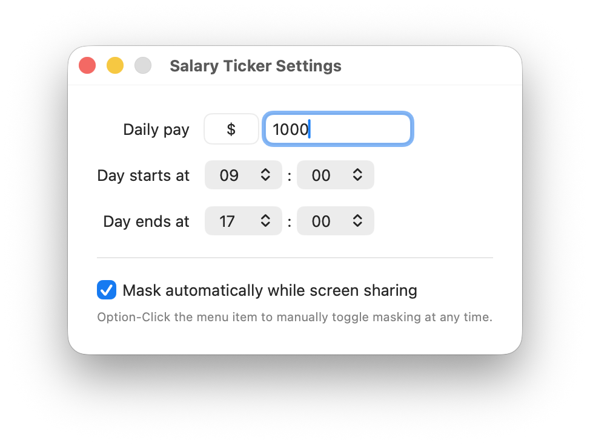

Salary Ticker
A tiny macOS menubar app that shows how much you've earned so far today, ticking up in real time.

Download for macOSFree · macOS 13 or later
A tiny macOS menubar app that shows how much you've earned so far today, ticking up in real time.

Download for macOSFree · macOS 13 or later